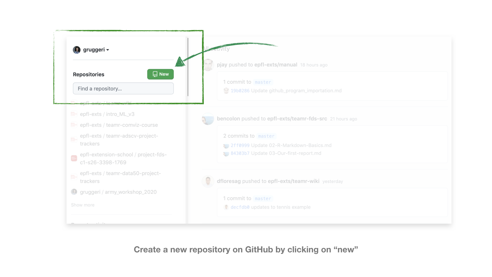
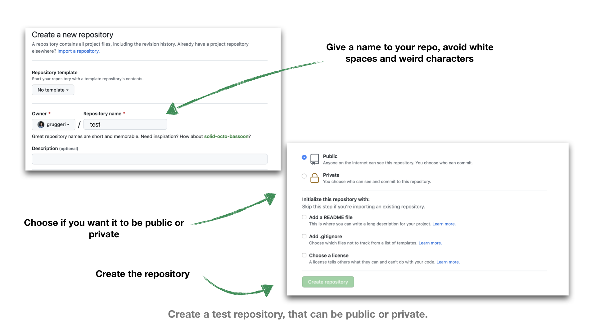
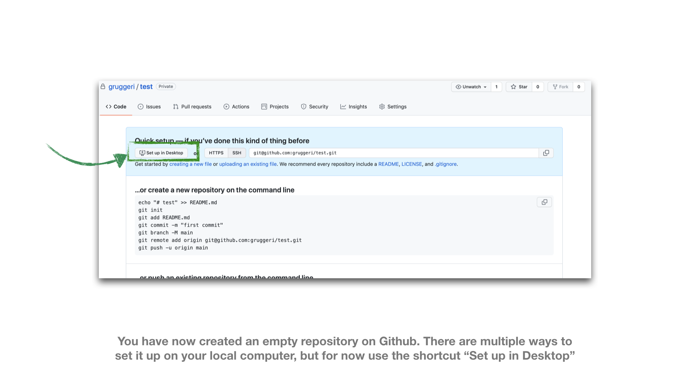
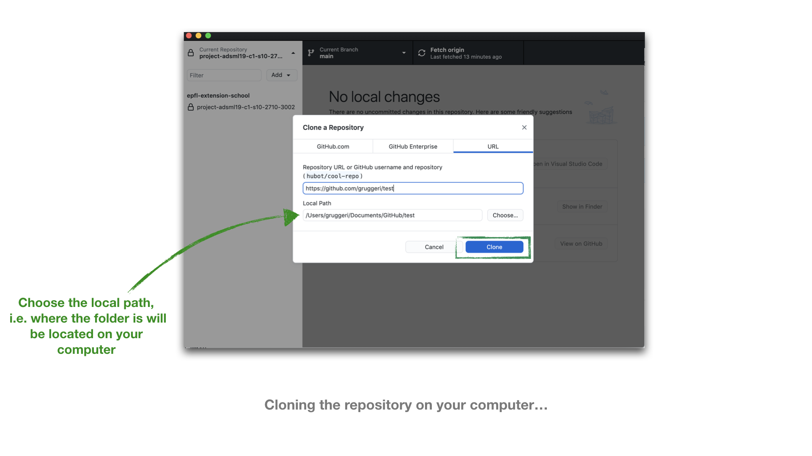
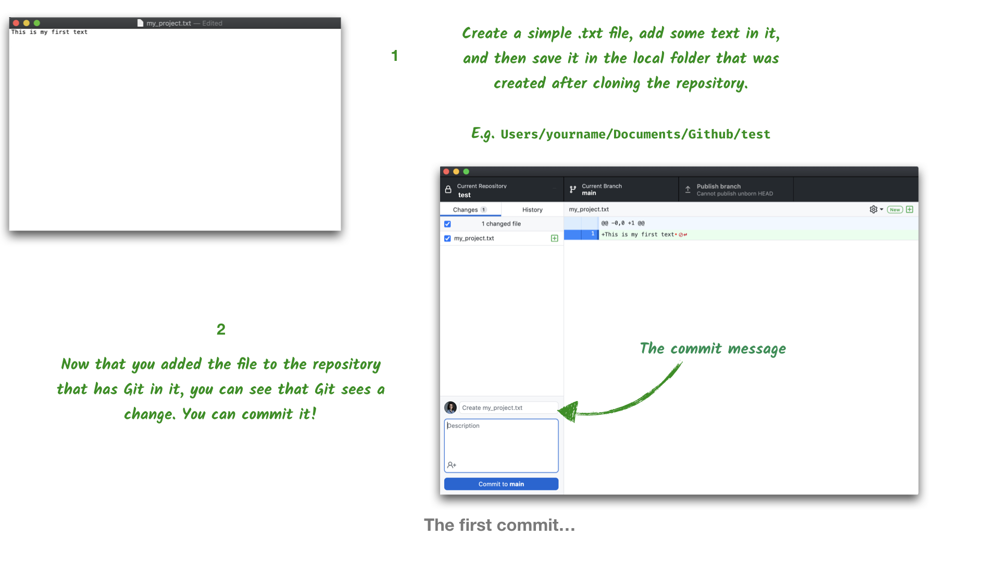
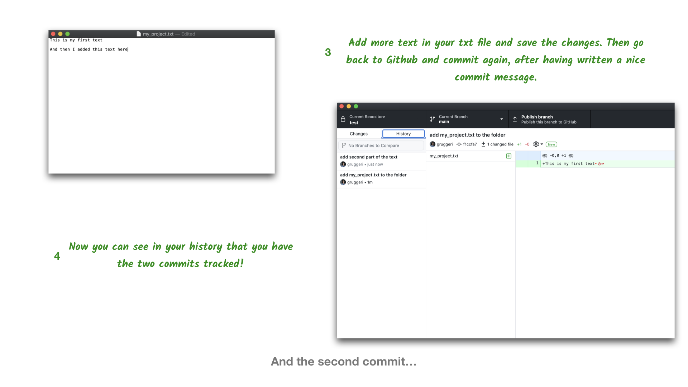
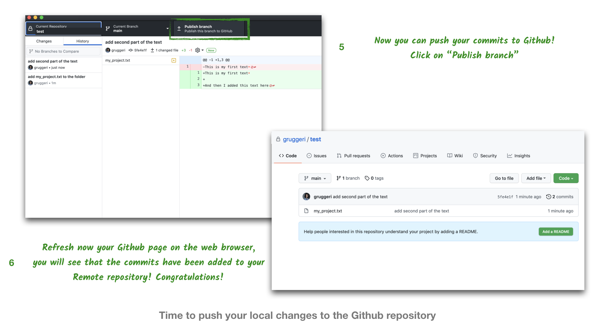

A first taste of Git: pushing your first repo
Please follow these instructions if you have already done the following:
- Have a Git installation on your computer
- Have a Github account
- Have installed the Github desktop
Creating a new repository
As a first step, please create a repository on Github. In order to do so, you can use the New green button that you will see from your main page.

At this point, Github will ask you a couple of details about your repository:
- you will need to give a name (please, do not use any blank space in the repository name)
- decide whether you want the repository to be public or private. You can always remove this repository or change this setting later.
Disregard the other options and click on “create a new repository”, as shown in the below illustration.

Now you have created an empty repository on Github, what we will do now is to clone it on our computer, using Github desktop. As usual, there are many ways to do this task but, for simplicity here, we will be using the shortcut Set up in Desktop.

At this point, a window will pop up, on your Github desktop from your you can select the local path to the repository. In other words, you can select the location of the folder that is connected to Github and that has Git setup.

Now it is time to use Git!
Your first commit
The folder on your computer will still be empty. Now do the following:
- Create a new
.txtfile, add a little bit of text to it. - Save the
.txtfile in the same location of your repository (e.g.~/Documents/yourname/test) - Go back to Github desktop and commit your change.
In order to commit, write a commit message (see below illustration) and click on commit in main.

Well done! You have done your first commit!
Normally, it is good practice to write descriptive commit messages that help you remember what happened between two commits. Messages like “Added function process_platform_raw() to process raw report .CSV files”. This is although just our initial commit, so you can simply write “Initial commit” or something similar.
Writing good, descriptive, short commit messages is actually an art in itself, and often more difficult than one might expect.
Doing your second commit
Now go back to your .txt file, open it again in your text editor and add more text and save the file again. Then go back to Github desktop and commit the change again. This is your second commit!

If you now click on the history tab on Github desktop, you will see the two commits you have done.
I know it might feel like overkill, in this case, to actually track a file just because you have added a sentence.
Indeed, the idea is not to necessarily commit every time you change a letter. The idea is to commit every time you have made a group of changes that you think constitute a milestone. This milestone can be as small or big as you see fit.
Experienced git users tend to commit often. They use Git to mark every well-defined granular change to their project. They end up with a detailed git history that not only documents the project well but lets them go back precisely at any important point in time.
Beginners tend to forget Git for some time, suddenly remember to commit, bundle a lot of changes and create files together and commit. Their git history is most often a bit chaotic and hard to read. But it is still much better than nothing and gives them at least some recovery options in case they want to go back.
Since this is not a course about Git best practices, you will be free to commit as often as you wish.
Pushing the commits to Github
All the work you have done was done on your local repository, the last missing step is to actually push you commits to the remote repository. In order to do so, click on Publish branch.
Now your remote repository will be at the same stage as your local one, i.e. it will have the two commits. Go back to your Github page and refresh it, you should see that your repository is not empty anymore.

Getting set up with Git and Github for the first time isn’t necessary straightforward.
If you encounter any issues, don’t hesitate to book a 1-1 so we can help you go through the process.